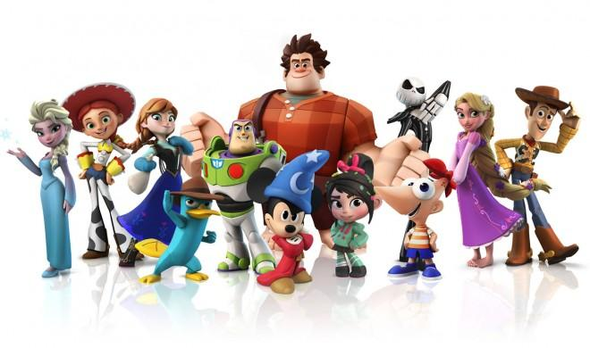
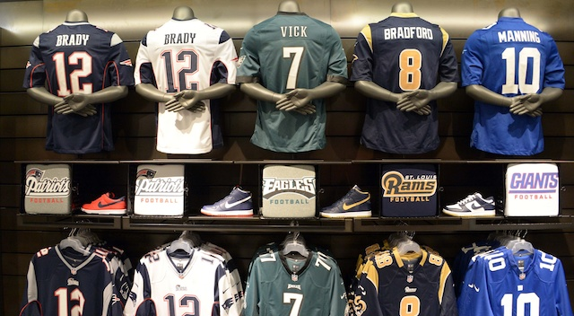

eChalk Update - All student accounts have been created and all classes have been uploaded. Students: your user name is your firstname.lastname and your password is your 9 digit OSIS#. If you have any questions, please email smiller@baysidehighschool.org
Pupil Path Update - Incoming students will receive a letter containing their pupil path user names and passwords during their guidance counselor appointment. Parent information (user names and passwords) are also on this letter.
The 1st meeting for our school newspaper (The Baysider) will be on September 23rd, during period 11, in room B6. We are looking for writers, photographers, and artists. All are welcome!
WELCOME BACK! FALL 2014 INFORMATION Please visit www.pupilpath.com for Summer Course & Regents grades, listed under 2013-2014, Term 7. Please download a copy of our new bell schedule for the 2014-15 school year!
AP Chemistry Summer Assignment - due the first day of school
PROSPECTIVE STUDENTS There will be 2 open house dates in the fall for the 2015-2016 school year: Tuesday, October 21, 2014 Auditorium doors will open at 6:30 pm and Information Session will begin promptly at 7 pm Thursday, November 6, 2014 Auditorium doors will open at 6:30 pm and Information Session will begin promptly at 7 pm
Specialized programs: Q12A - Digital Art & Design 12B - Music: Performance & Production Q12C - Environmental Engineering & Technology Q12D - Humanities & Non-Profit Management Q12E - Computer Programming & Web Design Q12G - Sports Medicine & Management
FAQs for Students applying for 2015-2016 school year
Audition Information 2014-2015 Attention current 7th Graders: As you begin your high school search process, here are some important dates to remember for the Bayside High School Digital Art & Music: Performance & Production Auditions -- Sunday, November 2, 2014 - 9:30 AM
- Saturday, November 15, 2014 - 2:00 PM
- Sunday, November 16, 2014 - 9:30 AM
- Saturday, January 10, 2015 - 9:30 AM
PTA SAT Prep Course for Fall 2014 Monday/Wednesday Classes after 9th Period start September 22, 2014 Saturday Morning Classes start September 20, 2014
LIKE us on Facebook FOLLOW us on Twitter
Instructions for logging into: E-Chalk (log in above) Pupil Path (pupilpath.com) * In Korean * In Chinese * In SpanishSpirit Week Comfy Cozy Day
SUNY Maritime college visit On M 9/29, SUNY Maritime will be visiting during period 7 in the Auditorium Balcony. Please stop by room 131 the day before to pick up a pass. Passes WILL NOT be distributed the day of the college visit. They will be collected at the door, and no one may enter without one. Your teacher's signature must be on the pass in order for you to be excused for that period. Please come to room 131 if you have any questions.
>> Tuesday, September 30Spirit Week Twin Day
>> Wednesday, October 1 Spirit Week Cartoon Day
>> Thursday, October 2CUNY Baruch college visit On TH 10/2, CUNY Baruch will be visiting during period 4 in the Auditorium Balcony. Please stop by room 131 the day before to pick up a pass. Passes WILL NOT be distributed the day of the college visit. They will be collected at the door, and no one may enter without one. Your teacher's signature must be on the pass in order for you to be excused for that period. Please come to room 131 if you have any questions.
 Spirit Week Jersey (Sports) Day
Pep Rally 3:30 PM
View Monthly CalendarPlease sign up to be placed on the Parent Coordinator’s email distribution list. The form can be found here.
MOUSE Squad Tech Support Request
General Response Protocol / Emergency Drill - letter from Mr. Athy
Letter to all students concerning 1st and 2nd period lateness
PSAL (Public School Athletic League) - sports calendar for all Bayside High School teams
Bayside High School Choir at Carnegie Hall Review in The New York Times Promo Video of performance Radio interview with Mr. Piccirillo
Bayside High School Alumni Site - this site has no association with the school or the school district
Seasonal Flu - a guide for parents
NYC Department of Education